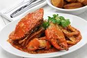

Chili Crab

Description
Chilli crab is a Singaporean seafood dish. Mud crabs are commonly used and are stir-fried in a semi-thick, sweet and savoury tomato and chilli based sauce. Despite its name, chilli crab is not a very spicy dish.
Ingredients
- Mud Crab
- Tomato Sauce
- Chili Sauce
- Garlic
- Ginger
- Chicken Stock
- Soy Sauce
- Sesame Oil
- Chili Sauce
Steps
- Boil water in a pot
- Add salt to the water
- Add rice to the pot
- Drain rice from the pot
- Mix garlic, ginger, chicken stock, soy sauce, and sesame oil in a bowl
- Add chicken to the bowl
- Steam chicken
- Chop chicken
- Chop rice
- Add chili sauce to the bowl